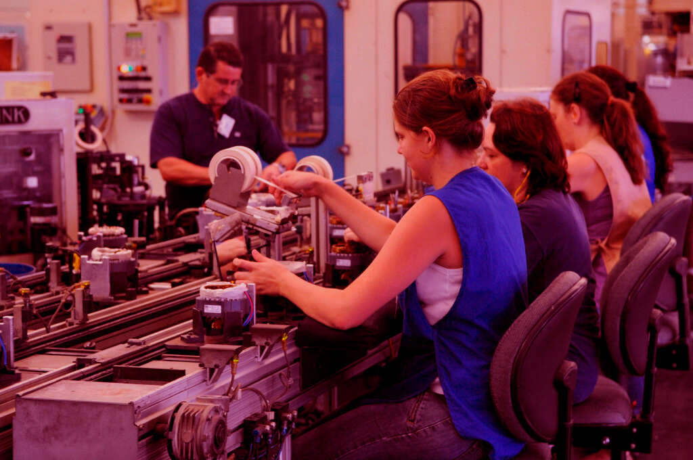

|
Sobre |
|
|
Nos últimos 25 anos, o número de trabalhadores vivendo em extrema pobreza caiu
drasticamente, apesar do impacto da crise econômica de 2008 e a recessão global.
Em países em desenvolvimento, a classe média representa 34 por cento da força de
trabalho empregada – um número que praticamente triplicou entre 1991 e 2015.
|
|
|
Entretanto, como a economia global continua a se recuperar com pequenos avanços
econômicos, ampliando as desigualdades, não há trabalho suficiente para todas e todas,
com o aumento da população. De acordo com a Organização Internacional do Trabalho,
mais de 204 milhões de pessoas estavam desempregadas em 2015.
Os ODS promovem o crescimento econômico sustentável, maiores níveis de produção e a
inovação tecnológica. O empreendedorismo será fundamental para criarmos vagas de trabalho,
assim como medidas efetivas para erradicar o trabalho forçado, a escravidão e o tráfico de
humanos. Com essa perspectiva, o objetivo é alcançar o pleno emprego e o trabalho decente para
todas as mulheres e homens até 2030.
|
|
 |
|
|
|